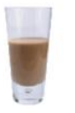
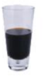

The Head First Lounge is, no doubt, the biggest trendsetter in Webville. Stop in to sample the eclectic offering of elixirs, teas, and coffees, or, stay a bit longer and enjoy the multicultural culinary menu that combines a harmony of taste, texture, and color with the best in fresh and healthy ingredients.
Our guarantee; at the lounge, we're committed to providing you, our guest, with an exceptional experience every time you visit. Whether you're just stopping by to check in on email over an elixir, or are here for an out-of-the-ordinary dinner, you'll find our knowledgeable service staff pay attention to every detail. If you're not fully satisfied, have a Blueberry Miss Elixir on us.
Now that you've experienced the lounge virtually, isn't it time to check us out for real? We're located right in the heart of Webville, and we've created some detailed directions to get you here in record time. No reservations necessary; come and join us anytime.
The ultimate healthy drink, this elixir combines herbal botanicals, minerals, and vitamins with a twist of lemon into a smooth citrus wonder that will keep your immune system going all day and all night.
Not your traditional chai, this elixir mixes mate with chai spices and adds an extra chocolate kick for a caffeinated taste sensation on ice.
Want to boost your memory? Try our Black Brain Brew elixir, made with black oolong tea and just a touch of espresso, Your brain will thank you for the boost.
Join us any evening for these and all our other wonderful elixirs.
We're frequently asked about the music we play at the lounge, and no wonder, it's great stuff. Just for you, we keep a list here on the site, updated weekly. Enjoy.